Umetanje i formatiranje automatskih oblika
Umetanje automatskog oblika
Da biste dodali automatski oblik u Uređivaču tabela,
- pređite na karticu Umetni na gornjoj traci sa alatkama,
- kliknite na ikonu Oblik na gornjoj traci sa alatkama,
- izaberite jednu od dostupnih grupa automatskih oblika iz Galerije oblika: Nedavno korišćeno, Osnovni oblici, Figurativne strelice, Matematika, Grafikoni, Zvezde i trake, Oblačići, Dugmad, Pravougaonici, Linije,
- kliknite na željeni automatski oblik u izabranoj grupi,
- postavite kursor miša na mesto gde treba da se doda oblik,
- kada se automatski oblik doda, možete promeniti njegovu veličinu i položaj, kao i njegova podešavanja. Takođe možete sačuvati automatski oblik kao sliku na čvrstom disku koristeći opciju Sačuvaj kao sliku u meniju desnog klika.
Kopiranje formatiranja stila automatskog oblika
Da biste kopirali formatiranje stila određenog automatskog oblika,
- izaberite automatski oblik čije formatiranje želite da kopirate mišem ili pomoću tastature,
- kliknite na ikonu Kopiraj stil na kartici Početna na gornjoj traci sa alatkama (pokazivač miša će izgledati ovako ),
- izaberite željeni automatski oblik da biste primenili isto formatiranje.
Podešavanje postavki automatskog oblika
- Iseci, Kopiraj, Nalepi – standardne opcije koje se koriste za isecanje ili kopiranje izabranog teksta/objekta i lepljenje prethodno isečenog/kopiranog teksta ili objekta na trenutnu poziciju kursora.
- Rasporedi se koristi za dovođenje izabranog automatskog oblika u prvi plan, slanje u pozadinu, pomeranje unapred ili unazad, kao i za grupisanje ili razgrupisanje oblika radi istovremenog rada sa više njih. Više informacija o raspoređivanju objekata možete pronaći na ovoj stranici.
- Poravnaj se koristi za poravnanje oblika ulevo, u sredinu, udesno, gore, po sredini ili dole. Više informacija o poravnanju objekata možete pronaći na ovoj stranici.
- Rotiraj se koristi za rotiranje oblika za 90 stepeni u smeru kazaljke na satu ili suprotno, kao i za horizontalno ili vertikalno okretanje oblika.
- Dodeli makro se koristi za brzo i jednostavno pokretanje makroa u tabeli dodeljivanjem makroa bilo kom obliku. Kada dodelite makro, oblik se pojavljuje kao dugme i možete pokrenuti makro klikom na njega. Više informacija potražite u odeljku Dodeljivanje makroa obliku ovog vodiča.
- Sačuvaj kao sliku se koristi za čuvanje oblika kao slike na vašem računaru.
-
Uredi tačke se koristi za prilagođavanje ili promenu zakrivljenosti oblika.
- Da biste aktivirali sidrišne tačke oblika, kliknite desnim tasterom miša na oblik i izaberite Uredi tačke iz menija ili kliknite na opciju Uredi oblik > Uredi tačke na desnom panelu. Crni kvadrati koji se pojave predstavljaju tačke na kojima se spajaju dve linije, a crvena linija ocrtava oblik. Kliknite i prevucite da biste promenili položaj tačke i oblik ivice.
-
Kada kliknete na sidrišnu tačku, pojaviće se dve plave linije sa belim kvadratima na krajevima. To su Bezierove ručice koje omogućavaju kreiranje krive i promenu njene glatkoće.
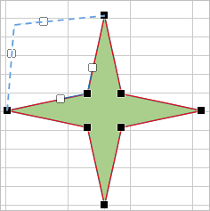
-
Dok su sidrišne tačke aktivne, možete ih dodavati i brisati.
Da biste dodali tačku u oblik, držite Ctrl i kliknite na mesto gde želite da dodate sidrišnu tačku.
Da biste obrisali tačku, držite Ctrl i kliknite na nepotrebnu tačku.
- Napredna podešavanja oblika se koriste za otvaranje prozora „Oblik – Napredna podešavanja“.
Neka podešavanja automatskog oblika mogu se promeniti pomoću kartice Podešavanja oblika na desnoj bočnoj traci, koja će se otvoriti ako izaberete umetnuti automatski oblik mišem i kliknete na ikonu Podešavanja oblika . Sledeća podešavanja se mogu menjati:
-
Popuna – koristite ovaj odeljak da izaberete popunu automatskog oblika. Možete izabrati sledeće opcije:
-
Popuna bojom – izaberite ovu opciju da biste postavili jednobojnu popunu unutrašnjeg prostora izabranog automatskog oblika.

Kliknite na obojeno polje ispod i izaberite potrebnu boju iz dostupnih paleta ili navedite bilo koju boju:
- Boje teme – boje koje odgovaraju izabranoj šemi boja tabele.
- Standardne boje – podrazumevane postavljene boje.
-
Takođe možete primeniti prilagođenu boju koristeći dve različite opcije:
- Pipeta – koristite ovu opciju da biste izabrali željenu boju klikom na nju u dokumentu.
-
Više boja – kliknite na ovaj natpis ako potrebna boja nije dostupna među paletama. Izaberite potreban opseg boja pomeranjem vertikalnog klizača boja i postavite određenu boju prevlačenjem birača boja unutar velikog kvadratnog polja boja. Kada izaberete boju pomoću birača boja, odgovarajuće RGB i sRGB vrednosti biće prikazane u poljima sa desne strane. Takođe možete definisati boju na osnovu RGB modela unosom numeričkih vrednosti u polja R, G, B (crvena, zelena, plava) ili unosom sRGB heksadecimalnog koda u polje označeno znakom #. Izabrana boja se prikazuje u polju Novo. Ako je objekat prethodno bio popunjen prilagođenom bojom, ona će biti prikazana u polju Trenutno kako biste mogli da uporedite originalne i izmenjene boje. Kada je boja definisana, kliknite na dugme Dodaj:

Prilagođena boja će biti primenjena na izabrani element i dodata u paletu Nedavne boje.
-
Gradijent popuna – koristite ovu opciju da popunite oblik sa dve ili više boja koje se postepeno prelivaju. Prilagodite gradijent bez ograničenja. Kliknite na ikonu Podešavanja oblika da biste otvorili meni Popuna na desnoj bočnoj traci:

Dostupne opcije menija:
-
Stil – izaberite između Linearno ili Radijalno:
- Linearno se koristi kada želite da se boje prelivaju sleva nadesno, odozgo nadole ili pod bilo kojim uglom koji izaberete u jednom smeru. Prozor za pregled Smer prikazuje izabrani pravac gradijenta, kliknite na strelicu da biste izabrali unapred definisan smer gradijenta. Koristite podešavanja Ugao za precizno određivanje ugla gradijenta.
- Radijalno se koristi kada se prelaz boja širi iz centra, počevši od jedne tačke ka spolja.
-
Tačka gradijenta je određena tačka prelaza iz jedne boje u drugu.
- Koristite dugme Dodaj tačku gradijenta ili klizač da biste dodali tačku gradijenta. Možete dodati do 10 tačaka gradijenta. Svaka nova dodata tačka neće uticati na trenutni izgled gradijent popune. Koristite dugme Ukloni tačku gradijenta da biste obrisali određenu tačku gradijenta.
- Koristite klizač da biste promenili položaj tačke gradijenta ili navedite Poziciju u procentima za precizno pozicioniranje.
- Da biste primenili boju na tačku gradijenta, kliknite na tačku na klizaču, a zatim kliknite na Boja da biste izabrali željenu boju.
-
Stil – izaberite između Linearno ili Radijalno:
-
Slika ili tekstura – izaberite ovu opciju da biste koristili sliku ili unapred definisanu teksturu kao pozadinu oblika.

- Ako želite da koristite sliku kao pozadinu oblika, otvorite padajući meni Izaberi sliku; ovde možete dodati sliku Iz fajla izborom sa čvrstog diska računara, Sa URL-a unosom odgovarajuće URL adrese u otvoreni prozor ili Iz skladišta izborom potrebne slike sa vašeg portala.
-
Ako želite da koristite teksturu kao pozadinu oblika, otvorite meni Iz teksture i izaberite odgovarajući unapred definisani uzorak.
Trenutno su dostupne sledeće teksture: platno, karton, tamna tkanina, zrnasta, granit, sivi papir, pletenina, koža, braon papir, papirus, drvo.
-
U slučaju da izabrana Slika ima manje ili veće dimenzije od automatskog oblika, možete izabrati podešavanje Razvuci ili Popločaj iz padajuće liste.
Opcija Razvuci omogućava prilagođavanje veličine slike tako da se uklopi u automatski oblik i potpuno popuni prostor.
Opcija Popločaj omogućava prikaz samo dela veće slike uz zadržavanje originalnih dimenzija ili ponavljanje manje slike uz zadržavanje originalnih dimenzija preko površine automatskog oblika kako bi se prostor potpuno popunio.
Napomena: bilo koja izabrana Tekstura podrazumevano potpuno popunjava prostor, ali po potrebi možete primeniti efekat Razvuci.
-
Šablon – izaberite ovu opciju da biste popunili oblik dvobojnim dizajnom sastavljenim od pravilno ponavljanih elemenata.

- Šablon – izaberite jedan od unapred definisanih dizajna iz menija.
- Boja prednjeg plana – kliknite na ovo polje boje da biste promenili boju elemenata šablona.
- Boja pozadine – kliknite na ovo polje boje da biste promenili boju pozadine šablona.
- Bez popune – izaberite ovu opciju ako ne želite da koristite nikakvu popunu.
-
Popuna bojom – izaberite ovu opciju da biste postavili jednobojnu popunu unutrašnjeg prostora izabranog automatskog oblika.
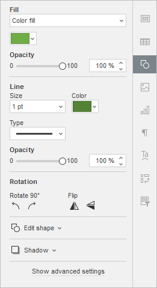
- Neprozirnost – koristite ovaj odeljak da biste podesili nivo Neprozirnosti prevlačenjem klizača ili ručnim unosom procentualne vrednosti. Podrazumevana vrednost je 100%. To znači potpunu neprozirnost. Vrednost 0% znači potpunu providnost.
-
Linija – koristite ovaj odeljak da biste promenili širinu, boju ili tip linije automatskog oblika.
- Da biste promenili širinu linije, izaberite jednu od dostupnih opcija iz padajuće liste Veličina. Dostupne opcije su: 0.5 pt, 1 pt, 1.5 pt, 2.25 pt, 3 pt, 4.5 pt, 6 pt. Alternativno, izaberite opciju Bez linije ako ne želite da koristite liniju.
- Da biste promenili boju linije, kliknite na obojeno polje ispod i izaberite potrebnu boju.
- Da biste promenili tip linije, izaberite potrebnu opciju iz odgovarajuće padajuće liste (podrazumevano se primenjuje puna linija, ali je možete promeniti u jednu od dostupnih isprekidanih linija).
- Da biste promenili neprozirnost linije, unesite željenu vrednost ručno ili koristite odgovarajući klizač.
-
Rotacija se koristi za rotiranje oblika za 90 stepeni u smeru kazaljke na satu ili suprotno, kao i za horizontalno ili vertikalno okretanje oblika. Kliknite na jedno od dugmadi:
- za rotiranje oblika za 90 stepeni suprotno smeru kazaljke na satu
- za rotiranje oblika za 90 stepeni u smeru kazaljke na satu
- za horizontalno okretanje oblika (sleva nadesno)
- za vertikalno okretanje oblika (naopako)
-
Uredi oblik – koristite ovaj odeljak da biste uredili tačke oblika ili zamenili trenutni automatski oblik drugim iz padajuće liste.
-
Uredi tačke se koristi za prilagođavanje ili promenu zakrivljenosti oblika.
- Kada kliknete na sidrišnu tačku, pojaviće se dve plave linije sa belim kvadratima na krajevima. To su Bezierove ručice koje omogućavaju kreiranje krive i promenu njene glatkoće.
-
Dok su sidrišne tačke aktivne, možete ih dodavati i brisati.
Da biste dodali tačku u oblik, držite Ctrl i kliknite na mesto gde želite da dodate sidrišnu tačku.
Da biste obrisali tačku, držite Ctrl i kliknite na nepotrebnu tačku.
- Promeni oblik se koristi za zamenu trenutnog automatskog oblika. Izaberite drugi automatski oblik iz padajuće liste.
-
Uredi tačke se koristi za prilagođavanje ili promenu zakrivljenosti oblika.
-
Sena – otvorite ovaj meni da biste izabrali jedan od unapred definisanih stilova senke za oblik.
- Bez senke – opozovite izbor ove opcije da biste prikazali senku, i obrnuto.
- Boja – izaberite jednu od dostupnih boja iz palete Boje teme ili Standardne boje; koristite alatku Pipeta da biste kopirali boju sa drugih objekata u dokumentu; ili kliknite na stavku menija Više boja da biste kreirali prilagođenu boju.
-
Podešavanje senke – kreirajte prilagođenu senku pomoću sledećih klizača:

- Providnost – podesite providnost senke.
- Veličina – podesite veličinu senke.
- Ugao – podesite ugao senke u odnosu na objekat.
- Udaljenost – podesite udaljenost senke od objekta.
Podesite napredna podešavanja oblika
Da biste promenili napredna podešavanja automatskog oblika, koristite vezu Prikaži napredna podešavanja na desnoj bočnoj traci. Otvoriće se prozor „Shape - Advanced Settings“:
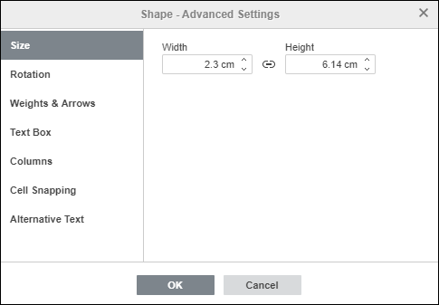
Kartica Veličina sadrži sledeće parametre:
- Širina i Visina – koristite ove opcije da biste promenili širinu i/ili visinu automatskog oblika. Ako je dugme Konstantne proporcije aktivirano (u tom slučaju izgleda ovako ), širina i visina će se menjati zajedno uz očuvanje originalnog odnosa stranica oblika.
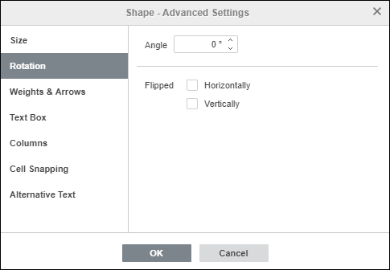
Kartica Rotacija sadrži sledeće parametre:
- Ugao – koristite ovu opciju da biste rotirali oblik za tačno određeni ugao. Unesite potrebnu vrednost izraženu u stepenima u polje ili je podesite pomoću strelica sa desne strane.
- Okrenuto – označite polje Horizontalno da biste okrenuli oblik horizontalno (sleva nadesno) ili označite polje Vertikalno da biste okrenuli oblik vertikalno (naopako).
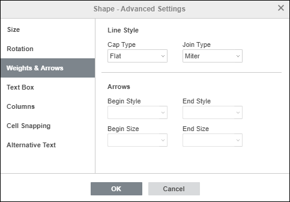
Kartica Debljine i strelice sadrži sledeće parametre:
-
Stil linije – ova grupa opcija omogućava podešavanje sledećih parametara:
-
Tip završetka – ova opcija omogućava podešavanje stila završetka linije, pa se može primeniti samo na oblike sa otvorenom konturom, kao što su linije, polilinije itd.:
- Ravno – krajnje tačke će biti ravne.
- Zaobljeno – krajnje tačke će biti zaobljene.
- Kvadratno – krajnje tačke će biti kvadratne.
-
Tip spoja – ova opcija omogućava podešavanje stila preseka dve linije, na primer može uticati na poliliniju ili uglove konture trougla ili pravougaonika:
- Zaobljeno – ugao će biti zaobljen.
- Ukoso – ugao će biti zakošen.
- Oštro – ugao će biti šiljat. Pogodno za oblike sa oštrim uglovima.
Napomena: efekat će biti uočljiviji ako koristite veću debljinu konture.
-
Tip završetka – ova opcija omogućava podešavanje stila završetka linije, pa se može primeniti samo na oblike sa otvorenom konturom, kao što su linije, polilinije itd.:
- Strelice – ova grupa opcija je dostupna ako je izabran oblik iz grupe Linije. Omogućava podešavanje Početnog i Završnog stila strelice kao i Veličine izborom odgovarajuće opcije iz padajućih lista.
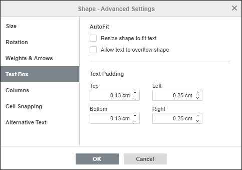
Kartica Polje za tekst omogućava da Promenite veličinu oblika da odgovara tekstu, Dozvolite da tekst prelazi ivice oblika ili promenite unutrašnje margine automatskog oblika Gore, Dole, Levo i Desno (tj. rastojanje između teksta unutar oblika i ivica automatskog oblika).
Napomena: ova kartica je dostupna samo ako je tekst dodat unutar automatskog oblika, u suprotnom je onemogućena.
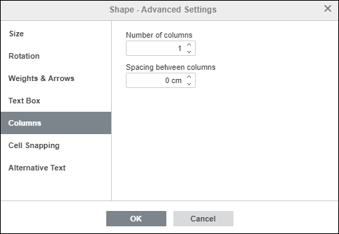
Kartica Kolone omogućava dodavanje kolona teksta unutar automatskog oblika definisanjem potrebnog Broja kolona (do 16) i Razmaka između kolona. Kada kliknete OK, postojeći tekst ili bilo koji novi tekst koji unesete unutar automatskog oblika biće prikazan u kolonama i prelaziće iz jedne kolone u drugu.
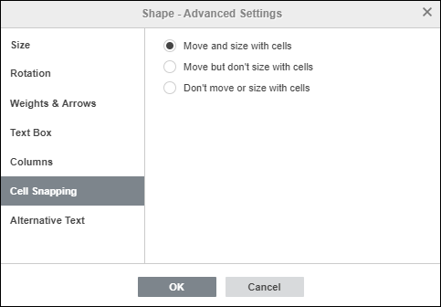
Kartica Prijanjanje uz ćelije sadrži sledeće parametre:
- Pomeraj i promeni veličinu zajedno sa ćelijama – ova opcija omogućava da se oblik poveže sa ćelijom iza njega. Ako se ćelija pomeri (npr. ako ubacite ili obrišete neke redove/kolone), oblik će se pomeriti zajedno sa ćelijom. Ako povećate ili smanjite širinu ili visinu ćelije, oblik će takođe promeniti svoju veličinu.
- Pomeraj, ali ne menjaj veličinu zajedno sa ćelijama – ova opcija omogućava da se oblik poveže sa ćelijom iza njega uz sprečavanje promene veličine oblika. Ako se ćelija pomeri, oblik će se pomeriti zajedno sa ćelijom, ali ako promenite veličinu ćelije, dimenzije oblika ostaju nepromenjene.
- Ne pomeraj niti menjaj veličinu zajedno sa ćelijama – ova opcija omogućava da sprečite pomeranje ili promenu veličine oblika ako se promeni položaj ili veličina ćelije.
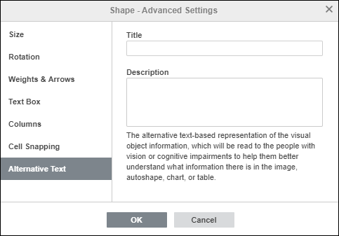
Kartica Alternativni tekst omogućava da navedete Naslov i Opis koji će biti pročitani osobama sa oštećenjem vida ili kognitivnim poteškoćama kako bi bolje razumele koje informacije oblik sadrži.
Umetnite i formatirajte tekst unutar automatskog oblika
Da biste uneli tekst u automatski oblik, izaberite oblik mišem i počnite da kucate tekst. Tekst će postati deo automatskog oblika (kada pomerite ili rotirate oblik, tekst se takođe pomera ili rotira zajedno sa njim).
Sve opcije formatiranja koje možete primeniti na tekst unutar automatskog oblika navedene su ovde.
Povežite automatske oblike pomoću konektora
Možete povezati automatske oblike pomoću linija sa tačkama povezivanja kako biste prikazali zavisnosti između objekata (npr. ako želite da napravite dijagram toka). Da biste to uradili,
- kliknite na ikonu Oblik na kartici Insert gornje trake sa alatkama,
-
izaberite grupu Linije iz menija,
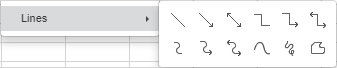
- kliknite na željeni oblik unutar izabrane grupe (izuzev poslednja tri oblika koja nisu konektori, odnosno Kriva, Škrabotina i Slobodna forma),
-
postavite kursor miša iznad prvog automatskog oblika i kliknite na jednu od tačaka povezivanja koje se pojavljuju na konturi oblika,
-
prevucite kursor miša ka drugom automatskom obliku i kliknite na odgovarajuću tačku povezivanja na njegovoj konturi.
Ako pomerite povezane automatske oblike, konektor ostaje pričvršćen za oblike i pomera se zajedno sa njima.
Takođe možete odvojiti konektor od oblika, a zatim ga ponovo povezati sa bilo kojim drugim tačkama povezivanja.
Dodelite makro obliku
Možete obezbediti brz i jednostavan pristup makrou unutar tabele dodeljivanjem makroa bilo kom obliku. Kada dodelite makro, oblik će se pojaviti kao dugme i moći ćete da pokrenete makro svaki put kada kliknete na njega.
Da biste dodelili makro:
-
Desnim klikom na oblik kome želite da dodelite makro izaberite opciju Dodeli makro iz padajućeg menija.
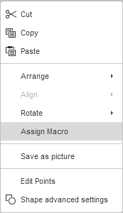
- Otvoriće se dijalog Dodeli makro
-
Izaberite makro sa liste ili unesite naziv makroa i kliknite OK da biste potvrdili.
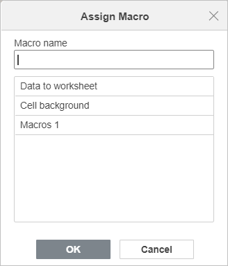